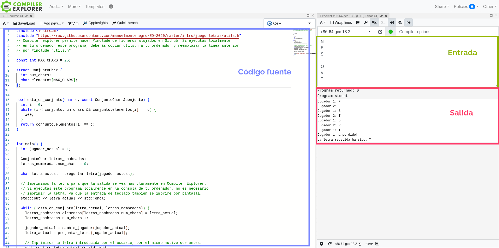

Acerca del curso
Trabajo en progreso...
Semana 1 - Introducción a los tipos abstractos de datos
-
Conocer la definición de Tipo Abstracto de Datos.
-
Utilizar los mecanismos de encapsulación de C++ para la implementación de Tipos Abstractos de Datos.
-
Conocer la terminología básica de TADs: modelo, representación, e invariantes.
-
Vídeos: 1h 4min
-
Total (incluyendo vídeos, cuestionarios y actividades de autoevaluación): 2h 10min
En la última clase de teoría hemos hecho un ejercicio de planificación de horarios. Aquí tienes el ejercicio junto con las soluciones.
📝 Planificación de horarios A (con solución)
📝 Planificación de horarios B (con solución)
Este ejercicio es similar al siguiente problema de Acepta el Reto: ACR 278: El baile de Cenicienta.
1.1. Motivación
En el ejercicio de planificación de horarios, tenemos dos maneras de
representar las duraciones: (1) mediante un struct que almacene los
distintos campos de una duración por separado, y (2) mediante un único número
entero que denote una cantidad de segundos. Cada una de estas
representaciones tiene sus ventajas e inconvenientes, y no existe una opción
que sea mejor que la otra en todos los casos. No obstante, lo que sí
resultaría claramente perjudicial sería que tu código dependiese, en gran
medida, de la opción escogida. ¿Qué pasaría si, pasado un tiempo tras haber
escogido una representación, tienes que rectificar y escoger la otra?
En el primer video que se enlaza a continuación vamos a presentar un ejemplo parecido:
▶️ Tipos Abstractos de Datos (TADs) - Motivación (8:32)
Antes de que en el siguiente video arreglemos nuestra implementación, puedes acceder en el siguiente enlace a una sesión de Compiler Explorer con el código que tenemos hasta ahora.
💻 Implementación inicial del juego
¿Puedes arreglarlo tú mismo? El objetivo es que modifiques la función main, añadiendo las funciones auxiliares que necesites, para que puedas cambiar entre las dos implementaciones de ConjuntoChar sin tener que realizar cambios en la función main resultante.
¿No sabes utilizar Compiler Explorer? Aquí tienes un mini-manual: Cómo usar Compiler Explorer
En el siguiente video veremos cómo se puede realizar esta encapsulación:
▶️ Definición de TAD (11:56)
📄 Código fuente (versión que utiliza un array de elementos)
📄 Código fuente (versión que utiliza un array de valores booleanos)
En la siguiente sesión de Compiler Explorer se encuentra el nuevo método main.
Observa que se hace un #include sobre la implementación que utiliza arrays
de caracteres (ConjuntoCharArray.h). Vamos a demostrar que esta
implementación es intercambiable con la que utiliza un array de booleanos
(ConjuntoCharBool.h). Para ello sustituye el #include anterior por uno que
haga referencia a este último fichero. El programa debería funcionar
perfectamente, ¡sin modificar una línea del método main!
1.2. Clases en C++
El último vídeo de la sección anterior nos deja un interrogante. ¿No sería mejor que el compilador nos impidiese acceder a las representaciones internas de los tipos de datos? Pues bien, esto es posible mediante clases en C++. A continuación se presentan tres vídeos sobre esto. Los dos primeros presentan conceptos que ya conocéis de la asignatura de Tecnología de la Programación: clases, métodos, constructores, etc. Aun así, prestad atención porque la sintaxis difiere bastante de lo que habéis visto en Java. El último vídeo introduce los métodos constantes; una característica propia de C++ que no se encuentra en Java.
▶️ C++ - Atributos y métodos (8:04)
▶️ C++ - Constructores y Listas de inicialización (11:14)
▶️ C++ - Métodos const (7:42)
💻 Transformar ConjuntoChar en una clase
Sustituye el struct por una clase de C++, y modifica las funciones definidas sobre conjuntos para queden integradas como métodos dentro de la clase.
La solución está en el siguiente video, en el que introducimos las clases de C++ en nuestro juego.
▶️ Encapsulación en TADs (7:58)
1.3. Conceptos básicos en Tipos Abstractos de Datos
En este último vídeo vamos a introducir de manera informal los conceptos que aparecen en el estudio de las estructuras de datos y los TADs: modelos, representaciones e invariantes de representación. También se introduce la importante distinción entre operaciones constructoras, observadoras y mutadoras.
▶️ Modelo vs representación en TADs (13:31)
1.4. Problemas de laboratorio
Semana 2 - TAD Lista. Vectores y listas enlazadas simples
-
Distinguir entre las dos regiones de memoria más importantes en C++: pila y heap.
-
Conocer las operaciones básicas del TAD Lista.
-
Saber implementar un TAD Lista mediante vectores redimensionables y mediante listas enlazadas simples.
-
Poder extender las operaciones soportadas por un TAD Lista en cualquiera de las dos implementaciones mencionadas.
-
Identificar los casos en los que es necesario escribir un constructor de copia en C++.
-
Vídeos: 1h 13min
-
Total (incluyendo vídeos, cuestionarios y actividades de autoevaluación): 2h 30min
2.1. Gestión de memoria dinámica en C++
Esta primera sección es importante. Muy importante. Gran parte de los problemas que aparecen cuando programamos en cualquier lenguaje provienen de la compartición entre las distintas estructuras de datos. Si no somos conscientes de esta compartición, los cambios en una estructura de datos podrían afectar a otras estructuras de manera inadvertida para el/la programador/a. Este problema es especialmente llamativo en C++, donde, al contrario que en Java o Python, somos responsables de liberar la memoria que creamos. Si lo hacemos de manera incorrecta, el programa podría provocar un error en tiempo de ejecución y abortar.
En el primer vídeo se introducen las principales regiones de memoria que entran en juego en ejecución: pila y heap. El vídeo es largo, pero es muy importante entenderlo. Ten paciencia y no te lo saltes:
▶️ ️C++ - Objetos y memoria dinámica (16:54)
Vamos a poner a prueba los conceptos vistos en el vídeo anterior.
❓ Cuestionario de autoevaluación - Objetos y memoria dinámica
Cuando tenemos objetos que apuntan a otros dentro del heap, puede ser difícil liberar de manera ordenada toda la maraña de objetos. Los destructores de C++ nos facilitan esta tarea:
▶️ ️C++ - Destructores (5:47)
Vamos a poner a prueba los conceptos vistos en el vídeo anterior.
2.2. TAD Lista y su implementación mediante vectores
A continuación os presento uno de los tipos de datos más utilizados en la mayoría de lenguajes de programación: las listas.
Comencemos viendo qué es una lista, y qué operaciones soporta:
▶️ El TAD Lista (6:10)
Ya sabemos las operaciones que ha de soportar este TAD. Ahora nos toca implementarlo. ¿Cómo lo hacemos?. Existen varias maneras:
- Utilizando un array unidimensional (es decir, un vector) para almacenar elementos.
- Utilizando una lista enlazada simple.
- Utilizando una lista doblemente enlazada.
- Utilizando una lista doblemente enlazada circular.
La primera de estas maneras se explica en esta misma sección. La segunda se explica en la sección siguiente, y las dos restantes se estudiarán la semana que viene.
La implementación de una lista mediante un array parece una tarea sencilla, pero cuidado: los arrays tienen una longitud fija, por lo que tendremos que tratar de modo especial el caso en que queramos añadir un elemento a la lista (operaciones push_back y push_front), y el array esté "completo". Para ello necesitamos un array que se redimensione a medida que se vaya quedando sin espacio libre.
▶️ Implementación del TAD Lista mediante arrays (9:38)
Hasta ahora podemos añadir elementos y eliminar elementos de la lista. Una operación que nos puede interesar es la de actualizar un elemento de la lista. Es decir, reemplazar un elemento de la lista por otro. En el siguiente enlace tienes la implementación de listas que tenemos hasta ahora.
💻 Solución
Añade el siguiente método a la clase ListArray:
void update(int indice, const std::string &elem);
Este método ha de reemplazar el elemento de la posición indice de la lista por el elemento elem pasado como parámetro.
Aunque un método update como el del ejercicio anterior podría ser útil en un TAD Lista (de hecho, las listas de la biblioteca estándar Java lo implementan), en C++ se utiliza otro enfoque distinto. Para actualizar elementos se hace uso de las referencias, que ya conocéis como mecanismo de paso de parámetros en C++. Se explica en el siguiente vídeo.
▶️ Modificación de listas mediante referencias (9:43)
En el siguiente programa podrás poner en práctica las referencias. Echa un vistazo al método main y sigue las instrucciones que aparecen allí.
💻 Solución
2.3. TAD Lista y su implementación mediante listas enlazadas simples
A continuación viene una de las implementaciones más importantes del TAD Lista: la implementación mediante listas enlazadas. Ojo a esta versión, porque vamos a ir profundizando en ella a lo largo de las siguientes semanas.
▶️ Implementación del TAD Lista mediante listas enlazadas (13:09)
Ahora que conoces dos implementaciones del TAD Lista, vamos a comparar los costes de sus operaciones:
❓ Cuestionario de autoevaluación - Coste de operaciones en el TAD lista
En el vídeo anterior (minuto 3:55) no soy demasiado preciso en lo que respecta al invariante de representación. Es cierto que este invariante no impone ninguna restricción sobre el atributo head, pero también hay que tener en cuenta la información de los nodos. En particular, los atributos next de los nodos definen la "forma" de la lista enlazada, y están sujetos a una serie de restricciones:
-
Si un nodo
xpertenece a la lista, el nodox->nextha de sernullptro apuntar a un nodo que también debe pertenecer a la lista enlazada. -
Si partimos del nodo
heady seguimos la cadena de nodosnext, en algún momento debemos llegar anullptr. Es decir, la secuencia de punterosnextno puede formar ningún ciclo. -
Un nodo pertenece a una única lista. Es decir, no se puede tener dos instancias de
ListLinkedSingletales que, si seguimos la cadena de nodos desde sus respectivos punteroshead, ambas confluyen en un nodo común.
Estas tres restricciones no se pueden expresar mediante una fórmula lógica simple. Dado que la verificación formal no es uno de los objetivos principales del curso, decidí no mencionar estas tres restricciones en el vídeo, pero deben satisfacerse en todo caso.
La segunda restricción podría expresarse fácilmente con ayuda de un predicado auxiliar recursivo. Sin embargo, para expresar las restricciones 1 y 3 necesitamos un concepto adicional, que es el footprint de un TAD. Si te interesa el área de la verificación formal de programas, puedes consultar las siguientes referencias:
- R. Leino. Specification and Verification of Object-Oriented Software.
- J. Blázquez, M. Montenegro, C. Segura. Verification of mutable linear data structures and iterator-based algorithms in Dafny
2.4. El constructor de copia en C++
Descansamos un poco del mundo de los TADs para ver una característica de C++ que no se encuentra en otros lenguajes orientados a objetos. C++ nos permite personalizar la forma en la que se inicializa un objeto a partir de otro. Para ello tenemos que implementar el constructor de copia:
▶️ C++ - Constructores de copia (8:39)
Las implementaciones del TAD Lista que hemos visto hasta ahora piden a gritos un constructor de copia, para evitar compartición no deseada. Es tu turno: ¿puedes implementarlo en ambas?
💻 Añadir constructor de copia a implementación mediante arrays
💻 Añadir constructor de copia a implementación mediante listas enlazadas
En el siguiente vídeo se muestra una posible forma de implementar el constructor de copia para los TAD vistos hasta ahora:
▶️ Constructores de copia en el TAD Lista (3:04)
📄 Código fuente (implementación mediante vectores)
📄 Código fuente (implementación mediante listas enlazadas)
En Java existe el constructor de copia como tal, pero es tratado como un constructor cualquiera. Por ejemplo, supongamos la siguiente clase:
class MiClase { ... }
Si asignamos un objeto c1 a un objeto c2,
MiClase c1 = new MiClase();
MiClase c2 = c1;
en realidad estamos haciendo que c2 apunte al mismo objeto que c1. Es decir, en Java no se llama a ningún constructor de copia.
Es posible implementar un constructor de copia en Java, declarándolo como un constructor que recibe otra instancia de MiClase.
class MiClase {
public MiClase() {/* constructor por defecto */}
public MiClase(MiClase other) {/* constructor de copia */}
// ...
}
En este caso, tendríamos que llamar al constructor explícitamente para hacer uso de él
MiClase c1 = new MiClase();
MiClase c2 = new MiClase(c1); // Llama al constructor de copia
Una alternativa al constructor de copia en Java es la clase Cloneable y el método clone() de la clase
Object.
2.5. Problemas de laboratorio
Semana 3 - TAD Lista. Listas enlazadas dobles y circulares
-
Simplificar las implementaciones de listas mediante el uso de nodos fantasma.
-
Conocer las listas doblemente enlazadas y circulares.
-
Aplicar los mecanismos de sobrecarga de operadores de C++ a los TADs para mejorar la legibilidad de los programas.
-
Vídeos: 1h 4min
-
Total (incluyendo vídeos, cuestionarios y actividades de autoevaluación): 2h 30min
3.1. Incorporando un nodo fantasma
La semana pasada presentamos las listas enlazadas simples como mecanismo de implementación del TAD Lista. Ahora vamos a incorporar una pequeña mejora en nuestra implementación. Consiste en introducir un nodo extra al principio de la lista enlazada, al que llamaremos nodo fantasma.
¿Para qué sirve esto? Aparentemente, es absurdo tener en memoria un nodo extra cuya información es irrelevante. Sin embargo, este nodo va a simplificar mucho las implementaciones.
▶️ ️Nodos fantasma (9:07)
Puede que después de esto pienses: «Bueno, tampoco hemos ganado tanto. Solo se han simplificado dos métodos». Ten paciencia. Los beneficios del nodo fantasma serán más evidentes cuando lleguemos a las listas enlazadas circulares.
3.2. Listas doblemente enlazadas
En los ejercicios que hemos hecho durante la semana pasada hemos tenido que recorrer una lista enlazada simple para manipular sus punteros. Estos recorridos se hacían de izquierda a derecha, ya que es más fácil avanzar por los nodos de una lista enlazada siguiendo el flujo de los punteros que retroceder por ellos. Al fin y al cabo, cada nodo contiene una conexión directa con el siguiente, pero no con el anterior.
Para motivar mejor la utilidad de lo que viene a continuación, vamos a hacer un ejercicio, similar a los de la semana pasada, pero más sencillo (para que os dé menos pereza hacerlo :-)).
Pasamos ahora a introducir las listas doblemente enlazadas:
▶️ ️Listas doblemente enlazadas (1) (7:20)
¿Y bien? ¿Dónde esta la mejora en eficiencia que os he prometido? Pues ahora vamos a ello: ¿cuáles son las operaciones que siguen teniendo coste lineal con respecto al tamaño de la lista? Aquellas que manipulan la lista por el final, ya que nos obligan a navegar por todos nodos de la lista hasta llegar al último de ellos, y hacer allí los cambios correspondientes. Sería ideal tener una manera directa de llegar a este último nodo sin recorrer la lista entera. A continuación lo haremos:
▶️ ️Listas doblemente enlazadas (2) (7:21)
Bueno, parece que por fin hemos mejorado el coste de algunas de las operaciones gracias a este nuevo puntero al último elemento de la lista.
SPOILER: no os encariñéis demasiado con el atributo last, porque no se va a quedar mucho tiempo con nosotros :-)
Antes de continuar, tengo una pregunta importante: ¿Por qué no hemos aplicado esta misma idea a las listas enlazadas simples? Al fin y al cabo, si yo tuviera un puntero al último nodo, el coste de muchas de las operaciones mejorarían... ¿o no?. Veámoslo:
💻 Ejercicio - Listas enlazadas simples con puntero al último nodo
En el siguiente cuestionario puedes repasar todos los conceptos vistos hasta ahora:
3.3. Listas enlazadas circulares
Pasamos a introducir el último tipo de listas enlazadas: las listas doblemente enlazadas circulares.
▶️ ️Listas enlazadas circulares (6:36)
En el siguiente cuestionario puedes poner a prueba lo visto en el vídeo anterior:
❓ Cuestionario de autoevaluación - Listas doblemente enlazadas y circulares
3.4. Sobrecarga de operadores en C++
Vamos a tomarnos un descanso de engarzar punteros entre los nodos de una lista enlazada para presentar una característica interesante de C++: la sobrecarga de operadores. Esta característica también se encuentra en otros lenguajes de programación (Python, C#, Lua, etc.), pero no en Java.
▶️ ️C++ - Sobrecarga de operadores (12:35)
En una de las diapositivas del vídeo anterior aparecía la lista de operadores sobrecargables. Entre ellos estaba el operador =. Hay que prestar atención a este operador, porque a veces vamos a tener que sobrecargarlo si no queremos que nuestras clases tengan comportamientos inesperados.
¿Qué es lo que hace el operador =?. Ya lo conocéis desde el año pasado. Si tenemos lo siguiente:
int x;
x = 2 + 4;
El operador = evalúa lo que tiene a su lado derecho (2 + 4) y sobreescribe el valor de la variable del lado izquierdo con el resultado de la evaluación.
Ahora bien ¿Qué pasa si yo hago una asignación de un registro a otro?
struct Punto {
int x;
int y;
};
// ...
Punto p1;
p1.x = 1;
p1.y = 2;
Punto p2;
p2 = p1; // <-- Asignación de p1 a p2
Por defecto, y salvo que indiquemos lo contrario, el operador = asigna el valor del campo p1.x a p2.x y similarmente con p1.y. El código sería equivalente al siguiente:
struct Punto {
int x;
int y;
};
// ...
Punto p1;
p1.x = 1;
p1.y = 2;
Punto p2;
p2.x = p1.x; // <-- Asignación del atributo x de p1 al atributo x de p2
p2.y = p1.y; // <-- Asignación del atributo y de p1 al atributo x de p2
El transferir la información, atributo por atributo, de un objeto a otro puede ser razonable en muchos casos, pero no en otros. Este problema ya lo hemos tenido la semana pasada con el constructor de copia. Si uno de los atributos del objeto a copiar es un puntero a otro, no me interesa copiar el puntero sin más, sino hacer una copia del contenido apuntado por ese puntero.
Estos problemas y otros similares son el objeto del siguiente vídeo:
▶️ ️C++ - Operador de asignación (12:19)
En el siguiente cuestionario podrás repasar lo visto en el vídeo anterior:
Ya que hemos aprendido cómo se sobrecargan operadores, vamos a ver cómo podemos aplicar la sobrecarga a las clases del TAD lista que hemos creado hasta ahora. En particular, vamos a sobrecargar los operadores de desplazamiento (<<), indexación ([]) y asignación (=).
▶️ Sobrecargando operadores en el TAD Lista (8:01)
Las implementaciones de nuestras versiones del TAD Lista quedan del siguiente modo:
📄 Código fuente (TAD Lista mediante arrays)
📄 Código fuente (TAD Lista mediante listas enlazadas simples)
📄 Código fuente (TAD Lista mediante listas doblemente enlazadas circulares)
3.5. Problemas de laboratorio
Semana 4 - Pilas, colas y colas dobles
-
Conocer las operaciones soportadas por los TADs Pila, Cola y Cola doble, y sus posibles implementaciones.
-
Aplicar estos tipos abstractos de datos a problemas concretos.
-
Utilizar plantillas de C++ para implementar estructuras de datos y tipos abstractos de datos genéricos.
-
Vídeos: 40min
-
Total (incluyendo vídeos, cuestionarios y actividades de autoevaluación): 2h 30min
4.1. Introducción a las plantillas de C++ (templates)
Hasta ahora hemos estudiado uno de los TADs más utilizados en programación, que es el TAD de las listas. Sabemos que una lista es una secuencia de elementos, pero ¿de qué tipo son esos elementos?. En los vídeos de las semanas anteriores hemos utilizado el tipo string para los elementos de la lista, pero por otro lado, en algunos de los problemas que hemos hecho las listas tenían elementos de tipo int.
Resulta fácil obtener una implementación de listas de enteros a partir de la implementación de listas de string. Basta con sustituir string por int, y listo. No obstante, cuando uno programa «en el mundo real», resulta engorroso tener que implementar varias versiones de las listas, una para cada tipo de datos que vayamos a utilizar. Y esto no solo implica la incomodidad de copiar/pegar/sustituir. Si más adelante queremos extender la implementación del TAD Lista con nuevas operaciones, tendremos que realizar los cambios en todas las versiones que hayamos derivado, una para cada tipo.
Puede que en la asignatura de Tecnología de la Programación hayáis estudiado (o lo estéis haciendo) la solución a esto: Generics. Java permite definir clases y funciones genéricas, que pueden ser utilizadas con distintos tipos de datos. Pues bien, resulta que en C++ también es posible disponer de este tipo de genericidad. El mecanismo es parecido, pero tiene un nombre distinto: plantillas o templates:
▶️ C++ - Plantillas en funciones (6:35)
▶️ C++ - Plantillas en clases (3:27)
A partir de ahora ya somos mayores, y todas las colecciones que implementemos a partir de ahora serán genéricas. Es decir, podrán almacenar datos de cualquier tipo.
Vamos a aplicar las plantillas a los tipos de datos que ya hemos implementado. Por ejemplo, volvamos a las listas doblemente enlazadas circulares. En el siguiente enlace puedes acceder a la implementación tal y como quedó la semana pasada. La clase ListLinkedDouble almacenaba listas cuyos elementos son de tipo string. ¿Puedes modificarla para que ahora pueda almacenar elementos de cualquier tipo T?
💻 Ejercicio: clase ListLinkedDouble genérica
💻 Solución
Los siguientes enlaces contienen la solución para cada una de las tres implementaciones del TAD lista que hemos visto: listas mediante vectores, listas enlazadas simples, y listas doblemente enlazadas circulares.
📄 Código fuente - Implementación mediante vectores
📄 Código fuente - Implementación mediante listas enlazadas simples
📄 Código fuente - Implementación mediante listas doblemente enlazadas circulares
En el siguiente cuestionario podrás repasar lo visto sobre plantillas en C++:
4.2. El tipo abstracto de datos Pila
A primera vista, el TAD que vamos a ver ahora parece algo limitado. De hecho, una de las primeras preguntas que se le viene uno a la cabeza cuando conoce las pilas es: ¿para qué sirve esto?. Curiosamente, resulta que las pilas se aplican una gran cantidad de algoritmos. De hecho, las pilas se encuentran en el modelo de ejecución de los lenguajes de programación que soportan funciones recursivas (vamos, casi todos los lenguajes).
Comenzamos viendo qué es una pila, y qué operaciones soporta:
▶️ El TAD Pila (4:06)
Parece un TAD sencillo de implementar... y, de hecho, lo es. En el siguiente vídeo vamos a presentar dos implementaciones de este tipo de datos: mediante vectores y mediante listas enlazadas.
▶️ Implementaciones del TAD Pila (6:32)
📄 Código fuente - Implementación mediante vectores
📄 Código fuente - Implementación mediante listas enlazadas
El siguiente cuestionario contiene algunas preguntas sobre las pilas y sus implementaciones:
Por último, veamos un par de campos de aplicación de las pilas:
▶️ Aplicaciones del TAD Pila (7:21)
El último vídeo esboza la idea de un evaluador de expresiones aritméticas. ¿Eres capaz de implementarlo? En el siguiente enlace encontrarás una plantilla que puedes completar:
💻 Ejercicio: evaluación de expresiones aritméticas en forma postfija
💻 Solución
Con respecto a la segunda aplicación que hemos presentado, estás más familiarizado/a con ella de lo que piensas. La pila de llamadas a funciones existe en todos los lenguajes, pero es más «visible» en los lenguajes interpretados, como Python, o aquellos que se ejecutan en una máquina virtual, como Java. Vamos a experimentar con la pila de llamadas a funciones en Java. Seguramente (y más de una vez, por desgracia) te ha salido un mensaje de error en Java debido a una excepción que se ha producido. Por ejemplo, en el siguiente enlace se muestra un programa que lanza un NullPointerException:
Ejecútalo mediante el botón Run. Te debería aparecer un mensaje de error en la parte inferior que reza lo siguiente:
Exception in thread "main" java.lang.NullPointerException
at Main.h(Main.java:13)
at Main.g(Main.java:17)
at Main.f(Main.java:21)
at Main.main(Main.java:25)
El listado que aparece debajo del nombre de la excepción es, precisamente, un resumen de la pila de llamadas existente en el momento de producirse dicha excepción. Leyendo desde abajo hacia arriba, desde la línea 25 del método main se ha llamado a un método f, que a su vez ha llamado a un método g, que a su vez ha llamado a otro método h, que es el que ha producido la excepción (concretamente en su línea 13).
Por otro lado, ¿te suena el término stack overflow? Puede que lo conozcas por el famoso portal web de preguntas y respuestas, pero también es un término utilizado para referirse al desbordamiento de la pila de llamadas. Por ejemplo, accede al siguiente enlace donde podrás ver una definición recursiva típica de la función factorial:
💻 Desbordamiento de pila en Java
Ejecuta el programa y se imprimirá por pantalla el factorial de 10. Hasta ahí todo normal. Ahora cambia el método main() (utiliza antes el botón Fork this) cambiando la llamada factorial(10) por factorial(-3). ¿Qué ha pasado? Se produce la cadena de llamadas factorial(-3) → factorial(-4) → factorial(-5) → ... y nunca se llega al caso base. La máquina virtual de Java reserva, al principio de programa, una cantidad de espacio determinada para la pila de llamadas. En caso de sobrepasarse esta cantidad (cosa que pasará, tarde o temprano, en el ejemplo anterior, al tener una secuencia infinita de llamadas recursivas) se produce un desbordamiento de pila (stack overflow en inglés), y la máquina virtual protesta lanzando un StackOverflowError.
4.3. El tipo abstracto de datos Cola
Pasamos al siguiente tipo abstracto de datos. También es bastante simple, pero ahí reside su utilidad:
▶️ El TAD Cola (2:52)
Al igual que las pilas, las colas admiten dos representaciones: mediante vectores y mediante listas enlazadas. No obstante, la representación mediante vectores es, en este caso, bastante curiosa...
▶️ Implementación del TAD Cola (6:30)
📄 Código fuente - Implementación mediante listas enlazadas
📄 Código fuente - Implementación mediante vectores circulares
Existe una tercera forma de implementar las colas. Consiste en utilizar dos pilas. ¿Te animas? Solamente puedes utilizar las operaciones de la interfaz pública de las pilas para implementar las operaciones de las colas.
💻 Ejercicio: implementación de una cola mediante dos pilas
💻 Solución
Además de las aplicaciones relacionadas con la implementación de los sistemas operativos, mencionadas en el vídeo El TAD Cola, las colas se utilizan como estructuras auxiliares en varios algoritmos como, por ejemplo, el recorrido en anchura de un árbol, que veremos más adelante.
En el siguiente cuestionario podrás poner en práctica los conceptos relativos a las colas:
4.4. El tipo abstracto de datos Cola Doble (deque)
Terminamos esta semana con otro tipo abstracto de datos que agrupa la funcionalidad de las pilas y las colas:
▶️ Colas dobles (deques) (2:11)
La brevedad del vídeo se debe a que tanto la interfaz como la implementación de las colas dobles es muy similar a una de las implementaciones del TAD lista, que hemos visto durante la semana pasada. Una doble cola puede ser implementada mediante una lista doblemente enlazada circular con nodo fantasma.
Último cuestionario de la semana. En este caso, preguntamos sobre las colas dobles:
4.5. Uso de los TADs vistos esta semana
¿Para qué sirven los tipos abstractos de datos que hemos visto esta semana? Al fin y al cabo, el TAD Lista, que ya conocíamos de antes, permite realizar lo mismo que las pilas, colas y colas dobles, y además soporta más operaciones. ¿Por qué no utilizamos una lista para todos los casos, y nos quitamos de complicaciones? Hay dos motivos:
-
Eficiencia: En esta asignatura debéis ser capaces de seleccionar aquellas estructuras que permitan realizar las operaciones que necesitéis teniendo en cuenta (1) el tiempo de ejecución y (2) el espacio ocupado en memoria. Supongamos que para resolver un problema necesitamos una pila. Si escogemos una implementación del TAD pila basada en listas enlazadas simples, todas las operaciones tendrían coste constante. Si utilizamos una implementación del TAD lista basada en listas doblemente enlazadas circulares, también podríamos realizar las mismas operaciones en coste constante, pero a costa de tener más consumo en memoria (cada nodo almacena un puntero
prevque no necesitamos). -
Claridad: Cuando un/a programador/a ve un tipo abstracto de datos concreto en un programa, se hace una idea preconcebida del uso que se va a hacer de él. Por ejemplo, cuando yo veo una variable de tipo
StackArrayoStackLinkedList, ya sé de antemano que va a almacenar una colección de elementos, y que se va a acceder a esos elementos siguiendo un orden LIFO (Last In, First Out). En cambio, si esta misma variable tuviese tipoListArray, yo esperaría que en algún momento se insertasen elementos por el final, o que se hiciese un recorrido de sus elementos. Tardaría más tiempo en darme cuenta de que se está haciendo un uso LIFO de esa variable.Resumiendo: El hecho no utilizar la estructura de datos más específica a tus necesidades puede provocar que otras personas tengan más dificultades para comprender tu código.
Los ejercicios que haremos durante esta semana irán destinados a que sepáis identificar si necesitáis una pila, una cola, o una doble cola para resolver un determinado problema. En el portal Acepta el reto hay varios problemas para los que se necesita alguno de estos TADs. A continuación enumero algunos problemas de este tipo, para que puedas ir practicando:
- ACR 127: Una, dola, tela, catola...
- ACR 145: El tren del amor
- ACR 146: Números afortunados
- ACR 187: Solitario
- ACR 197: Mensaje interceptado
4.6. Problemas de laboratorio
Semana 5 - Iteradores
-
Identificar los casos de uso de un iterador.
-
Conocer la implementación de los iteradores en las distintas implementaciones del TAD Lista.
-
Conocer la noción de iterador como abstracción de puntero.
-
Aplicar las clases de la STL para realizar problemas concretos.
-
Vídeos: 48min (+3 min opcional)
-
Total (incluyendo vídeos, cuestionarios y actividades de autoevaluación): 2h
5.1. Motivación. ¿Para qué sirven los iteradores?
Los iteradores son unos Tipos Abstractos de Datos muy utilizados para recorrer listas. Permiten a un programador moverse secuencialmente por los elementos de una lista, independientemente de si la lista está implementada mediante un vector o mediante una lista enlazada.
Para entender mejor la utilidad de los iteradores, comienza por el siguiente cuestionario:
❓ Cuestionario de autoevaluación - ¿Para qué sirve un iterador?
Ahora veamos para qué sirve el TAD Iterador y cuáles son las operaciones que soporta.
▶️ Introducción a los iteradores (9:41)
5.2. Iteradores en listas enlazadas
La primera implementación de iteradores que veremos será en el contexto de la clase ListLinkedDouble. En este caso, un iterador contiene un puntero al nodo que está siendo señalado actualmente por el iterador.
▶️ Iteradores y listas enlazadas (5:30)
Vamos a hacer un pequeño inciso sobre un aspecto de C++ que no está cubierto en los vídeos. Observa el constructor de la clase iterator en el código fuente de ListLinkedDouble. ¡Es un constructor privado!. En primer lugar, ¿por qué es privado?. En segundo lugar, ¿cómo creo instancias de iterator si su constructor es privado?. Respondemos a estas preguntas a continuación:
-
¿Por qué es privado? Por dos motivos. El primero es porque queremos que un/a usuario/a de la clase
ListLinkedDoublesolamente pueda obtener iteradores llamando a los métodosbeginyend. El segundo motivo se debe a que el cliente de la claseListLinkedDoubleno tiene acceso al tipoNode, ya que su definición también es privada (y así debe seguir siéndolo). Por tanto, ¿cómo podría un/a programador/a crear un iterador directamente, si no tiene ningún puntero aNodecon el que llamar a su constructor? Y si, aun así, tuviese acceso al tipoNode¿qué garantiza que el/la programador/a vaya a crear un iterador de manera correcta?. Por estos motivos, es mejor encapsular la creación de iteradores exclusivamente mediante el uso de los métodosbeginyend. -
¿Cómo creo instancias de
iterator? En general, no es posible acceder a los métodos y atributos privados de una clase desde fuera de ella, pero hemos hecho un pequeño «truco». La clave está en la siguiente declaración dentro de la claseiterator:friend class ListLinkedDouble;Con esto estamos diciendo que la clase
ListLinkedDoublees amiga deiterator. Esto significa que la claseListLinkedDoublepuede acceder a los atributos y métodos privados de la claseiterator. Por este motivo, en los métodosbeginyendhemos podido llamar a los constructores deiterator, aunque sean privados. En general, C++ nos permite declarar clases y funciones amigas de una determinada claseA. Estas clases y funciones podrán acceder, en su código, a los atributos y métodos privados deA. Fíjate en que la declaraciónfrienddebe estar dentro de la definición de la claseA. Con esto nos aseguramos de que la persona que ha creado la claseAindica expresamente quiénes son las amigas de la clase.
Los iteradores nos permiten hacer referencia a posiciones arbitrarias dentro de una lista.
-
¿Puedes escribir un método dentro de
ListLinkedDoubleque inserte un elemento antes de la posición indicada por un iterador? -
¿Puedes escribir un método que elimine el elemento señalado por un iterador?
💻 Ejercicio: inserción y eliminación de elementos en una lista
En el siguiente vídeo se explica la solución. Ten en cuenta que las implementaciones que se detallan allí no solo realizan la inserción/borrado correspondientes, sino que también devuelven otro iterador. Es importante saber por qué.
▶️ Inserción y borrado con iteradores (3:16)
De este vídeo se extrae un importante resultado:
Aviso
Las operaciones que insertan o eliminan elementos de una lista pueden afectar, o incluso invalidar, los iteradores que actualmente existan sobre esa lista.
Uno de los principales errores del principiante es, precisamente, el acceso a iteradores invalidados. Cuando veamos la STL más adelante, veremos cómo saber qué operaciones sobre listas alteran o invalidan a los iteradores existentes.
En el siguiente cuestionario podrás practicar todo lo visto hasta ahora:
En el siguiente vídeo vamos a ver la relación que existe entre los iteradores y el modificador const. A partir del minuto 4:20 se explican unos detalles de implementación. Si te pierdes en esos detalles, no te preocupes; no es esencial para la asignatura.
▶️ Iteradores constantes (5:59)
Ahora viene una parte bonita, conocida como el azúcar sintáctico. En el siguiente vídeo vamos a renombrar los métodos advance y elem que hemos definido hasta ahora, con el objetivo de acercar la sintaxis que estamos utilizando a la sintaxis de los punteros de C++. También aprovechamos para presentar el especificador auto y la sintaxis de los bucles for que hacen uso de iterador.
▶️ Adaptando la sintaxis de los iteradores (7:13)
5.3. Iteradores en arrays
De nuevo, seguimos en el TAD Lista, pero ahora en su implementación mediante vectores. Gracias a la sintaxis que hemos empleado en el último vídeo (el operador * en lugar del método elem y el operador ++ en lugar del método advance), la incorporación de iteradores a esta implementación es extremadamente simple.
Ojo a la parte final del video, que explica por qué los iteradores son una generalización de los punteros.
▶️ Iteradores en ListArray (4:01)
El concepto de iterador es omnipresente en el lenguaje C++. Hemos visto que existen iteradores para strings. En la sección siguiente veremos que también existen iteradores para flujos de salida (ofstream y compañía). De momento, vamos a practicar un poco los iteradores sobre cadenas con un par de ejercicios:
La función toupper, definida en el fichero de cabecera <cctype>, recibe un carácter y devuelve su carácter equivalente en mayúsculas. Utilizando iteradores sobre cadenas, extiende esta función para que transforme todos los caracteres de una cadena a mayúsculas:
💻 Ejercicio - Pasar una cadena a letras mayúsculas
💻 Solución
Decimos que una cadena es cochanbrosa (sic) si contiene una letra n antes de una letra p, o antes de una letra b. Por ejemplo: "Inbécil", "Colonbia". Escribe una función que determine si una cadena es cochanbrosa. Para ello utiliza dos iteradores que recorran simultáneamente la lista.
💻 Ejercicio - Cadenas cochanbrosas
💻 Solución
5.4. Introducción a la STL
El acrónimo STL proviene de Standard Template Library. La STL forma parte de la librería estándar de C++ y consiste, básicamente, en un conjunto de clases que implementan los Tipos Abstractos de Datos que hemos visto este curso, y algunos TADs más que nos quedan por ver. Además de eso, la STL implementa una gran cantidad de algoritmos que trabajan sobre estos TADs: ordenación, búsqueda, etc.
En efecto, todo lo que hemos visto sobre los TADs Lista, Pila, Cola y Doble Cola ya está implementado. También todo lo relacionado con los iteradores. A partir de ahora os voy a pedir que utilicéis las clases de la STL para realizar los problemas que requieran el uso de estos TADs, en lugar de las implementaciones que os he ido proporcionando estas semanas. Pero ¡ojo!, si en algún ejercicio os pido añadir alguna operación que requiera acceso a la representación interna de los TADs, entonces sí que debéis utilizar las implementaciones que hemos ido desarrollando en los vídeos de estas semanas.
Aunque la interfaz de los TADs de la STL es siempre es la misma, las implementaciones concretas dependen del compilador que utilicéis, y además suelen ser bastante crípticas debido al gran número de optimizaciones y características avanzadas de C++ de las que hacen uso.
Pero entonces, si todo esto está ya implementado, ¿por qué hemos estado perdiendo el tiempo implementándolo nosotros/as?. En realidad, no hemos estado perdiendo el tiempo. Uno de los objetivos de este curso es conocer la implementación interna de estos TADs para poder tener una decisión informada sobre qué implementación nos conviene para según qué propósito.
Dicho todo esto, vamos a iniciar nuestro estudio de los TADs de la STL, pero antes te voy a dar la oportunidad de que la explores tú mismo/a.
Accede al siguiente enlace:
Investiga un poco las clases que están bajo el apartado Sequence containers y Container adaptors. A continuación, resuelve el siguiente cuestionario:
Ahora sí, los vídeos:
▶️ C++ - Contenedores lineales en la STL (3:06)
▶️ C++ - Iteradores en la STL (3:46)
▶️ C++ - Algoritmos en la STL (1) (4:58)
Aquí tienes un ejemplo para que puedas ir practicando con los algoritmos de la STL:
💻 Ejercicio: algoritmos de la STL
💻 Solución
Queda comentar un último aspecto de la STL que es importantísimo tener en cuenta a la hora de trabajar con los iteradores. De nuevo, accede a la siguiente página:
Observa la sección Iterator invalidation. La tabla nos dice qué iteradores se invalidan a la hora de hacer una modificación sobre un determinado TAD. Debes recordar lo siguiente:
-
Tras hacer una inserción en un objeto de la clase
list, los iteradores que hubiese sobre esa lista siguen siendo válidos. Si se realiza un borrado, también siguen siendo válidos excepto si apuntan al elemento borrado. -
Tras hacer una inserción en un objeto de la clase
vector, si el array se redimensiona, todos los iteradores quedan invalidados. Si no se redimensiona, solo los iteradores que apunten antes del elemento insertado se mantienen válidos; los que apuntan después del elemento insertado quedan invalidados. Lo mismo se aplica a los borrados. Para un/a usuario/a de la clasevectorresulta difícil predecir de antemano cuándo se produce un redimensionado del array, por lo que normalmente hay que suponer que, cuando se realiza una inserción o borrado en unvector, todos los iteradores se invalidan.
Finalizamos nuestro viaje por la STL con un cuestionario:
5.5. TADs en la librería estándar de Java (Opcional)
Aunque este curso está centrado en C++, seguramente utilizas Java en otras asignaturas. Te dejo un breve vídeo con las clases que necesitas conocer para utilizar los TADs vistos hasta ahora en Java.
▶️ Java - TADs Lineales (Opcional) (3:02)
5.6. Problemas de laboratorio
Semana 6 - Árboles binarios
-
Conocer las definiciones básicas de los árboles y los conceptos que indican las relaciones entre los nodos.
-
Conocer la subcategoría más habitual al trabajar con árboles: los árboles binarios.
-
Implementar funciones sobre árboles.
-
Vídeos: 54min (+3:55min opcionales)
-
Total (incluyendo vídeos, cuestionarios y actividades de autoevaluación): 2h 30min
6.1. Presentando los árboles
Esta semana comenzamos un nuevo tema: los tipos de datos basados en estructuras arborescentes y, en particular, los árboles binarios. Los árboles binarios nos proporcionan una base sobre la que implementar los TADs que nos quedan por ver en este curso: conjuntos, multiconjuntos y diccionarios.
En el siguiente vídeo se introduce la definición de árbol y una serie de conceptos asociados que aparecerán de manera recurrente a lo largo de las próximas semanas:
▶️ Introducción a los árboles (6:03)
El vídeo anterior contiene mucha terminología nueva. Vamos a ponerla en práctica con ejemplos:
6.2. Árboles binarios
Dentro de los distintos tipos de árboles que hemos introducido en el vídeo anterior, los árboles binarios son, sin duda, los más utilizados. Esta subcategoría de árboles proporciona los mecanismos que necesitaremos a la hora de implementar los TADs mencionados arriba, sin llegar a introducir más complejidad que la necesaria.
Como siempre, cada vez que presentamos un nuevo Tipo Abstracto de Datos, enumeramos las operaciones soportadas por él. Esto es lo que hacemos en el siguiente vídeo:
▶️ El TAD Árbol Binario (4:21)
Para entender los costes de los algoritmos que trabajan sobre árboles es necesario conocer muy bien la relación entre el número de nodos que hay en un árbol binario en función de su altura. Dado un árbol de altura h, ¿cuántos nodos tiene como mínimo? ¿y como máximo?
❓ Cuestionario de autoevaluación - Número de nodos en un árbol binario
Hay varias maneras de implementar el TAD de los árboles binarios. La más habitual es la implementación mediante nodos en el heap. La idea es muy similar a la de las listas enlazadas: tenemos nodos que apuntan a otros nodos.
▶️ Implementación de árboles binarios (10:09)
El final del vídeo revelaba un problema peliagudo: ¿Cómo se destruyen los nodos de manera ordenada, es decir, sin acabar haciendo delete sobre el mismo nodo dos veces?. El hecho de que los árboles compartan nodos dificulta la tarea. En el vídeo anterior se menciona una alternativa que eliminaría el problema de raíz: evitar la compartición entre nodos. Pero hay otra posibilidad:
¿Cómo modificarías la clase BinTree para que su constructor hiciese una copia de los nodos de los árboles que recibe?
💻 Ejercicio: Evitar la compartición mediante copias de nodos
💻 Solución
En la siguiente sección presentaremos la alternativa que involucra el uso de punteros inteligentes. Esta es la que utilizaremos a lo largo de esta semana.
6.3. Punteros inteligentes en C++ y su aplicación al TAD Árbol Binario
Hasta ahora hemos hablado mucho de punteros inteligentes, pero no hemos dicho en qué consisten. Esto es un aspecto más avanzado de C++, el cual vamos a presentar en el siguiente vídeo:
▶️ C++ - Punteros inteligentes (8:18)
Si dentro de nuestra clase BinTree sustituimos los punteros «tontos» TreeNode * por punteros inteligentes, podemos descansar de la tarea de saber cómo y cuando liberar los nodos. ¿Te animas?
La solución está en el siguiente vídeo. Esta será la implementación que utilizaremos en el resto de esta semana y la siguiente.
▶️ Compartición en árboles binarios (3:13)
6.4. Funciones recursivas sobre árboles binarios
En los ejercicios de evaluación continua que realizaremos esta semana se pide implementar funciones que reciban un árbol binario recibido como parámetro y lo examinen recursivamente para obtener un determinado valor (por ejemplo, número de nodos, altura, etc.). Recuerda que los árboles binarios son un TAD recursivo, por lo que es bastante habitual que las funciones de las que te hablo sean también recursivas.
Vamos a comenzar con unos ejemplos sencillos. Para ello comienza accediendo al siguiente enlace:
-
Implementa una función que, dado un
BinTree, devuelva el número de nodos que contiene. La función es externa a la claseBinTree. Es decir, la implementación no debe hacer uso de los atributos privados de esta clase, ni siquiera hacer uso deTreeNode.template <typename T> int numero_nodos(const BinTree<T> &tree); -
Implementa una función que, dado un
BinTree, devuelva su altura. La función es externa a la claseBinTree.template <typename T> int altura(const BinTree<T> &tree); -
Implementa una función que, dado un
BinTreede números enteros, devuelva la suma de la información contenida en todos sus nodos. La función es externa a la claseBinTree.int suma_nodos(const BinTree<int> &tree); -
Implementa una función que, dado un
BinTreede números enteros, devuelva un valor booleano indicando si alguno de sus nodos contiene un número par. La función es externa a la claseBinTree.bool contiene_pares(const BinTree<int> &tree);
Antes de continuar estudiando más funciones sobre árboles binarios, vamos a hacer una breve parada por algunas clases de la librería estándar de C++. Estas funciones nos van a ser útiles para implementar funciones que devuelvan varios resultados. Puede que ya las conozcas de la asignatura de Fundamentos de Algoritmia.
▶️ C++ - Los tipos pair y tuple (8:33)
6.5. Árboles binarios equilibrados
A continuación se muestra una definición muy importante: los árboles equilibrados. Un árbol está equilibrado si es el árbol vacío, o bien la diferencia entre las alturas de sus hijos es menor o igual que 1 y ambos hijos son equilibrados. Aparentemente podemos implementar una función similar a las que has hecho antes para poder determinar si un árbol está equilibrado. Pero ¡ojo!, si lo haces de manera «ingenua» puedes incurrir en costes elevados. Se explica en el siguiente vídeo:
▶️ Funciones sobre árboles binarios (13:07)
En el anterior vídeo se ha quedado una propiedad pendiente de demostrar. Aquí explico la demostración:
▶️ Demostración del coste de la versión inicial de la función height() (Opcional) (3:55)
El siguiente documento te puede resultar útil para saber cómo resolver una recurrencia, pero ten en cuenta que esto es un prerrequisito de este curso. Concretamente, habéis visto este material en la asignatura de Fundamentos de Algoritmia.
📕 Cálculo de costes en funciones recursivas
El siguiente test plantea varios algoritmos genéricos sobre árboles. Debes plantear la recurrencia y utilizar las fórmulas del documento anterior para obtener el orden de complejidad de los algoritmos.
❓ Cuestionario de autoevaluación - Funciones sobre árboles binarios
6.6. Ejercicios y problemas de laboratorio
Semana 7 - Recorridos en árboles binarios
-
Distinguir los distintos tipos de recorridos en un árbol binario: preorden, inorden, postorden y recorrido en anchura.
-
Saber implementar, de manera recursiva, los recorridos en profundidad: preorden, inorden y postorden.
-
Saber implementar, de manera iterativa, el recorrido en anchura de un árbol utilizando una cola auxiliar.
-
Utilizar objetos función y expresiones lambda para definir las acciones a realizar en el recorrido de un árbol.
-
Vídeos: 47min
-
Total (incluyendo vídeos, cuestionarios y actividades de autoevaluación): 2h
7.1. Recorriendo un árbol binario
Ya sabéis cómo recorrer listas utilizando iteradores. ¿Y si quisiéramos recorrer un árbol? El problema aquí es más complejo, ya que los árboles son estructuras no lineales y el orden en el que pueden visitarse los nodos no resulta tan obvio como en el caso de una lista.
Dedicaremos esta semana a los tipos de recorridos más habituales en un árbol. El siguiente vídeo es el más importante de esta semana. En él se describen los tipos de recorridos que vamos a estudiar durante este curso.
▶️ Recorridos de árboles binarios (7:41)
¿Has entendido la diferencia entre los recorridos? En el siguiente test puedes practicarlos:
❓ Cuestionario de autoevaluación - Recorridos en árboles binarios
7.2. Una primera implementación de los recorridos en un árbol
Conocidos los conceptos relativos a los recorridos, vamos a comenzar con las implementaciones. Para facilitar las cosas, supondremos que la operación de visitar un nodo consiste, simplemente, en imprimir su contenido.
La implementación de los recorridos en profundidad es bastante sencilla si se aborda con un diseño recursivo:
▶️ Implementación de recorridos en profundidad (DFS) (3:25)
La implementación de los recorridos en anchura se complica un poco más, debido al hecho de que utiliza una cola auxiliar. No obstante, la idea siendo bastante intuitiva. Además, para este recorrido no hace falta recursión:
▶️ Implementación de recorridos en anchura (BFS) (4:11)
7.3. Redefiniendo la acción de visitar: funciones de orden superior
Comencemos con un sencillo ejercicio:
Nuestra definición de inorder hace un recorrido en inorden de un árbol binario, imprimiendo el valor de cada nodo a medida que pasaba por él. En el siguiente ejercicio, modifica el método inorder para que reciba dos parámetros adicionales:
-
after (de tipo
string) - Indica la cadena que debe imprimirse tras el contenido de cada elemento. Debe sustituir al espacio en blanco (" ") que imprime la versión actual deinorder. -
min_value (de tipo
const T &) - Indica un valor umbral mínimo que ha de tener un elemento para que se muestre por pantalla. Los nodos del árbol cuyo valor sea menor quemin_valueno serán mostrados.
💻 Ejercicio: parametrizar el método inorder
💻 Solución
Con este ejercicio hemos conseguido personalizar ligeramente las acciones a realizar en cada nodo durante el recorrido, pero, aun así, hay mucho margen de mejora. ¿Y si quisiéramos hacer otra cosa que no sea, simplemente, imprimir el nodo por pantalla? Sería muy complicado (y absurdo) tener un método inorder distinto para cada tipo de acción que queramos hacer sobre un árbol. El objetivo de esta sección es modificar los métodos preorder, inorder y postorder para que reciban como parámetro una función que implemente la acción a realizar para cada nodo.
Pero, ¿es posible pasar una función como parámetro en C++? Sí, es posible.
Las funciones de C++ pueden asignarse a variables, pueden pasarse por parámetro, o incluso devolverse como resultado. Los lenguajes de programación que permiten todo esto reciben el nombre de lenguajes de orden superior.
Vamos a ver cómo funcionan las funciones de orden superior en un sencillo ejemplo con listas. Antes de comenzar con el siguiente vídeo, conviene que repases el primer ejercicio de la hoja que vimos hace un par de semanas (Recorridos con iteradores). En particular, echa un vistazo a la función eliminar_pares.
▶️ C++ - Funciones de orden superior (7:37)
Antes de seguir, vamos a poner en práctica la nueva función eliminar con algunos ejemplos, que también servirán para motivar el vídeo que viene después.
Dada una lista de nombres recibida por teclado, utiliza la función eliminar para eliminar aquellos nombres que comiencen por la letra A.
💻 Ejercicio: eliminar nombres que comiencen por la letra A
💻 Solución
Dada una lista de nombres recibida por teclado, utiliza la función eliminar para eliminar aquellos nombres que comiencen por la letra que indique el usuario a través de la entrada.
💻 Ejercicio: eliminar nombres que comiencen por la letra indicada por el usuario
¿Has conseguido resolver este último? Es más difícil, porque la función que se pasa como parámetro depende de la letra introducida por el usuario. No obstante, el ejercicio se puede resolver con los mecanismos que hemos visto en el vídeo anterior. A continuación se muestra una posible solución, aunque podría no gustarte:
💻 Solución: eliminar nombres que comiencen por la letra indicada por el usuario
¡Aggg! ¿Eso era una variable global?. Sí, pero tenemos suerte, porque los objetos función, que veremos a continuación, permiten librarnos de esta variable:
▶️ C++ - Objetos función (11:57)
Intenta ahora resolver el problema anterior, pero utilizando objetos función:
💻 Ejercicio: eliminar nombres que comiencen por la letra indicada por el usuario
💻 Solución
Con los objetos función hemos conseguido lo que queríamos, pero sin hacer uso variables globales. No obstante, hemos tenido que crear una clase adicional para implementar la sobrecarga del operador (). A continuación presentamos las expresiones lambda, que permiten declarar objetos función «de usar y tirar»:
▶️ C++ - Expresiones lambda (7:29)
A continuación, modifica la solución del ejercicio anterior sustituyendo el objeto función por una expresión lambda:
💻 Ejercicio: expresiones lambda para eliminar nombres comiencen por la letra indicada por el usuario
💻 Solución
Todo lo que ha venido en esta sección ha sido bastante denso. Vamos a aplicarlo al tema que hemos estado tratando esta semana: los recorridos en un árbol.
▶️ Parametrizando el recorrido de un árbol (5:19)
Finalizamos con un test de autoevaluación sobre la implementación de recorridos:
❓ Cuestionario de autoevaluación - Implementación de los recorridos de un árbol
7.4. Ejercicios y problemas de laboratorio
Semana 8 - Árboles binarios de búsqueda y el TAD Conjunto
-
Identificar las operaciones principales del TAD Conjunto.
-
Diferenciar los casos de uso del TAD Conjunto y los del TAD Lista.
-
Conocer las propiedades de los árboles binarios de búsqueda.
-
Conocer la implementación de las operaciones de inserción, búsqueda y borrado en árboles binarios de búsqueda.
-
Vídeos: 57min (+14 min opcionales)
-
Total (incluyendo vídeos, cuestionarios y actividades de autoevaluación): 2h
8.1. Operaciones del TAD Conjunto
Esta semana comenzamos con un nuevo tipo abstracto de datos para almacenar colecciones de elementos: el TAD Conjunto. Para ello, utilizamos el enfoque de siempre: identificamos un modelo al que se le asocian un conjunto de operaciones.
▶️ El TAD Conjunto - operaciones (6:18)
Es esencial conocer la diferencia entre los conjuntos y las listas. Existen varias propiedades que los diferencian. En primer lugar, el contenido de una lista depende del orden en el que insertemos los elementos. Esto implica que los dos fragmentos de programa que aparecen a continuación no son equivalentes:
Programa 1
list<int> l;
l.push_back(1);
l.push_back(2);
Programa 2
list<int> l;
l.push_back(2);
l.push_back(1);
Por el contrario, en los conjuntos, las inserciones son intercambiables. Los fragmentos que vas a ver a continuación sí son semánticamente equivalentes:
Programa 1
set<int> s;
s.insert(1);
s.insert(2);
Programa 2
set<int> s;
s.insert(2);
s.insert(1);
Otra propiedad que disfrutan los conjuntos, pero no las listas, es el hecho de que la operación de inserción es idempotente. Es decir, los siguientes fragmentos son semánticamente equivalentes:
Programa 1
set<int> s;
s.insert(1);
s.insert(1);
Programa 2
set<int> s;
s.insert(1);
Con las listas no ocurre lo mismo. Si se añade un mismo elemento dos veces al final de una lista, la lista contendrá ambas apariciones del mismo elemento.
8.2. Primera implementación del TAD Conjunto: listas ordenadas
Nuestro primer intento de implementación del TAD Conjunto se basa en el TAD Lista que ya hemos visto anteriormente. La idea consiste en mantener una lista que contenga los elementos del conjunto, evitando tener elementos duplicados. Las tres operaciones básicas de los conjuntos (insertar, eliminar y comprobar la pertenencia de un elemento) requieren hacer una búsqueda por la lista1, cosa que sabemos hacer.
Ya conocéis, además, que la búsqueda es más eficiente si se hace en una lista ordenada, ya que en estos casos puede utilizarse el algoritmo de búsqueda binaria.
▶️ Implementación del TAD Conjunto mediante listas ordenadas (Opcional - 13:56)
Pese a la relativa sencillez de la implementación, las listas ordenadas no resultan demasiado útiles para implementar el TAD Conjunto, porque hay alternativas mejores. En particular, se obtienen implementaciones más eficientes mediante otros mecanismos como, por ejemplo, los árboles binarios de búsqueda y las tablas hash. En la siguiente sección se describen los árboles binarios de búsqueda. Las tablas hash se estudiarán dentro de dos semanas.
En el caso de la inserción, necesitamos la búsqueda para comprobar que el elemento que se quiere insertar no exista ya en la lista.
8.3. Árboles binarios de búsqueda
Pasamos a ver una de las estructuras de datos más importantes de este curso: los árboles binarios de búsqueda (ABB).
▶️ Árboles binarios de búsqueda - introducción (12:01)
Un comentario sobre el coste: Resulta fácil ver que la búsqueda tiene coste lineal con respecto a la altura del árbol. También resulta intuitivo el hecho de que la altura, en el caso peor, puede llegar a ser lineal con respecto al número de nodos del árbol (esto pasa, en particular, cuando el árbol es degenerado). No obstante, si el árbol es equilibrado, la altura es logarítmica con respecto al número de nodos del árbol.
Hemos visto cómo se buscan elementos en un ABB. Pasamos a estudiar la inserción de elementos.
Antes de pasar al vídeo, vamos a intentar deducir las líneas generales del algoritmo:
Ahora veamos cómo se implementa la inserción en C++:
▶️ Inserción en árboles binarios de búsqueda (9:39)
Pasamos al borrado de elementos en un ABB. Esto es más difícil de lo que parece, sobre todo si eliminamos un nodo interno. De nuevo, es importante que intentes el siguiente ejercicio/cuestionario para poder entender mejor el vídeo que viene después.
Ahora sí, vemos la explicación e implementación en C++:
▶️ Eliminación en árboles binarios de búsqueda (15:31)
El vídeo anterior explica que para borrar un nodo con dos hijos hemos de reemplazar el nodo borrado con el menor de los elementos del hijo derecho. Otra posibilidad podría haber sido reemplazarlo con el mayor de los elementos del hijo izquierdo. Para ello tendríamos que bajar al hijo izquierdo y, desde allí, seguir el camino descendente bajando por los hijos derechos de cada nodo, hasta que no sea posible descender más.
A continuación vamos a ver unos resultados importantes sobre los árboles binarios de búsqueda. En particular, vamos a ver la relación entre el orden de inserción en un ABB y el hecho de que esté equilibrado. Luego veremos las propiedades del recorrido en inorden en un ABB.
De este ejercicio se deduce un aspecto importante sobre el coste de estos algoritmos, que depende de si el árbol sobre el que se aplican está equilibrado o no. A su vez, el hecho de que un árbol esté equilibrado depende del orden en el que se hayan insertado sus elementos. Por ejemplo, si insertamos en un ABB vacío los elementos 5, 1 y 7 (en este orden), obtenemos un árbol equilibrado. Por el contrario, si insertamos en un ABB vacío los elementos 1, 5 y 7 (en ese orden) no obtenemos un árbol equilibrado.
Existen otras implementaciones de ABBs que se reequilibran automáticamente cada vez que se inserta o borra un elemento. De este modo, las operaciones de inserción, eliminación y búsqueda siempre tienen coste logarítmico. Este tipo de árboles se estudian en otras asignaturas más avanzadas de algoritmia. En esta asignatura nos conformaremos con saber que existen implementaciones así. Entre ellas:
-
Árboles AVL: Consiguen equilibrar el árbol mediante rotaciones en sus nodos (Referencia).
-
Árboles rojinegros: Cada nodo lleva asociado un color (rojo o negro), y existen algunas reglas que determinan la estructura del árbol (por ejemplo, los hijos de un nodo rojo han de ser negros). Mantener esas reglas desemboca en el hecho de que el árbol acaba estando equilibrado (Referencia).
8.4. El retorno del TAD Conjunto
¿Por qué hemos estado hablando tanto de los árboles de búsqueda? Porque son un mecanismo muy útil para implementar el TAD Conjunto, que hemos visto al principio de esta semana, y el TAD Diccionario, que veremos la semana que viene. En el caso de los conjuntos, utilizar árboles binarios de búsqueda supera con creces, en términos de coste asintótico, la eficiencia de la implementación basada en listas ordenadas.
▶️ Implementación del TAD Conjunto mediante ABBs (13:46)
En el tema introductorio sobre Tipos Abstractos de Datos comenzamos con un juego en el que dos jugadores iban nombrando letras hasta que el primero de ellos nombraba una letra repetida. Allí se utilizaba una implementación rudimentaria del TAD Conjunto que estaba restringida a caracteres comprendidos entre A y Z. Ahora podemos hacer uso de nuestra implementación SetTree para poder extender el rango de caracteres. ¿Te animas?
💻 Solución
Terminamos la teoría de esta semana con un pequeño cuestionario sobre el TAD conjunto.
8.5. Problemas de laboratorio
Cuestionario - Clases en C++
Cuestionario - Modelo vs representación
Cuestionario - Objetos y memoria dinámica
Cuestionario - Destructores
Cuestionario - Coste de operaciones en TAD lista
Ejercicio - Imprimir elementos de lista al reves
Paso 1. Versión iterativa
Accede al siguiente enlace:
Verás la declaración de un método display_reverse dentro de ListLinkedSingle. Implementa este método. Para ello puedes utilizar el resto de métodos (por ejemplo, at)
Por ejemplo, si l representa la lista [0, 1, 2, 3, 4, 5, 6, 7, 8, 9], entonces la llamada a l.display_reverse() debe imprimir por pantalla [9, 8, 7, 6, 5, 4, 3, 2, 1, 0].
Ten en cuenta que display_reverse es una función observadora. No puede modificar la lista. Tan solo se limita a imprimir su contenido.
Cuando termines, rellena el siguiente cuestionario:
Paso 2. Versión recursiva
Vamos a intentar hacer una versión recursiva. Haz clic en el siguiente enlace:
Verás implementado un método display_reverse dentro de ListLinkedSingle, que a su vez hace uso de un método auxiliar privado llamado display_reverse_aux(Node *). Implementa este último método.
Cuando termines, rellena el siguiente cuestionario:
Ejercicio - Listas enlazadas simples con puntero al último elemento
Vamos a pensar un poco en el siguiente ejercicio:
Listas enlazadas simples con puntero al último elemento
El ejercicio consiste en añadir un atributo last a las listas enlazadas simples con el fin de tener acceso directo al último elemento de la lista.
Vamos a centrarnos en los métodos push_back, pop_back y back. ¿Habría alguna mejora en el coste asintótico si añadiésemos este atributo last?
Rellena el siguiente cuestionario:
Vemos que una de las funciones no mejora su coste por el hecho de tener un nuevo atributo last. El motivo es que, tras borrar el último elemento, tenemos que hacer que last apunte al elemento anterior, y para ello tenemos que recorrer toda la lista otra vez.
¿Y si la clase ListLinkedSingle tuviera un puntero last_but_one que apunte al penúltimo nodo de la lista? Así mejoraría el coste del método pop_back, llegando a ser constante, ¿no?.
Cuestionario - Listas enlazadas simples
Cuestionario - Listas doblemente enlazadas y circulares
Cuestionario - Sobrecarga de operadores
Cuestionario - Plantillas en C++
Cuestionario - Pilas
Cuestionario - Colas
Cuestionario - Colas dobles
Cuestionario - ¿Para qué sirve un iterador?
Cuestionario - Iteradores sobre listas
Cuestionario - TADs lineales en la STL
Cuestionario - STL (1)
Cuestionario - Árboles
Cuestionario - Número de nodos
Funciones sobre árboles binarios
Cuestionario - Recorridos en árboles binarios
Cuestionario - Implementación de recorridos en árboles binarios
Ejercicio - Inserción en un árbol binario de búsqueda
Supongamos que tenemos el siguiente árbol de búsqueda:

Solo forman parte del árbol los nodos amarillos. Los círculos blancos no forman parte del árbol. Solo están para marcar las posiciones en la pregunta siguiente.
Inserción mediante un ejemplo
Continuamos la ejecución de la inserción:
Continuando el ejemplo anterior suponemos que, tras descender por el árbol, llegamos a un árbol vacío:
Por último planteamos el caso en el que ya existiese un nodo con el mismo valor que el que quiero insertar:
Ejercicio - Borrado en un árbol binario de búsqueda
Primer caso: el nodo a borrar no tiene hijos
Supongamos que tenemos el siguiente árbol de búsqueda binario, del cual quiero eliminar el número 8. El árbol tiene un nodo con el valor 8, y ese nodo no tiene hijos.

Segundo caso: el nodo a borrar tiene un hijo
Ahora voy a eliminar el 10 del siguiente árbol de búsqueda binario:

Así me queda el "árbol":

Tercer caso: el nodo a borrar tiene dos hijos
Volvamos al árbol original. Ahora quiero eliminar el 7:

Oops! ¿Cómo arreglo esto para que vuelva a ser un árbol?

Tendremos que colocar otro nodo del árbol en su lugar.
Ejercicio - orden de inserción en ABB y recorridos en inorden
Primer caso
Vamos a comenzar con un ABB vacío y vamos a insertar los números del 1 al 7 en el siguiente orden:
4, 2, 1, 6, 3, 5, 7
Segundo caso
Volvemos a empezar con un ABB vacío, pero ahora vamos a insertar los números del 1 al 7 en el siguiente orden:
7, 6, 5, 4, 3, 2, 1
En los dos casos anteriores, al hacer el recorrido en inorden de un árbol binario de búsqueda (ABB) hemos obtenido una secuencia ordenada ascendente. ¿Se cumple esto para cualquier ABB?
Tercer caso
Hemos visto que al insertar los elementos en orden descendente se obtenía un árbol degenerado.
Vuelve a repetir el ejercicio, pero esta vez insertando los elementos en el orden ascendente:
1, 2, 3, 4, 5, 6, 7
Cuestionario - El TAD conjunto
Cómo usar compiler explorer
La pantalla de Compiler Explorer se divide en tres zonas:

-
Código fuente: Aquí se escribe el código C++ del programa que quieres ejecutar. Cada vez que lo modificas, se compila automáticamente.
-
Entrada: La información que recibirá el programa a través de la salida estándar. Cada vez que tu programa ejecute
cin >> ..., la lectura se realizará a partir de lo que haya en el cuadro de texto. -
Salida: Salida estándar escrita por tu programa mediante
cout << .... Si hubiera errores de compilación en tu código, se mostrarían aquí. Aquí también aparece una línea con el textoProgram returned: N, dondeNes un número. SiNes 0, el programa ha finalizado correctamente. Si es un número distinto de 0, es que tu programa ha producido un error en tiempo de ejecución (división por cero, acceso a puntero inválido, acceso a un array más allá de sus límites, etc).
¿Y si no me aparece el panel de Entrada y Salida?
Encima del código fuente, haz clic en el menú Add new... y selecciona Execution Only.